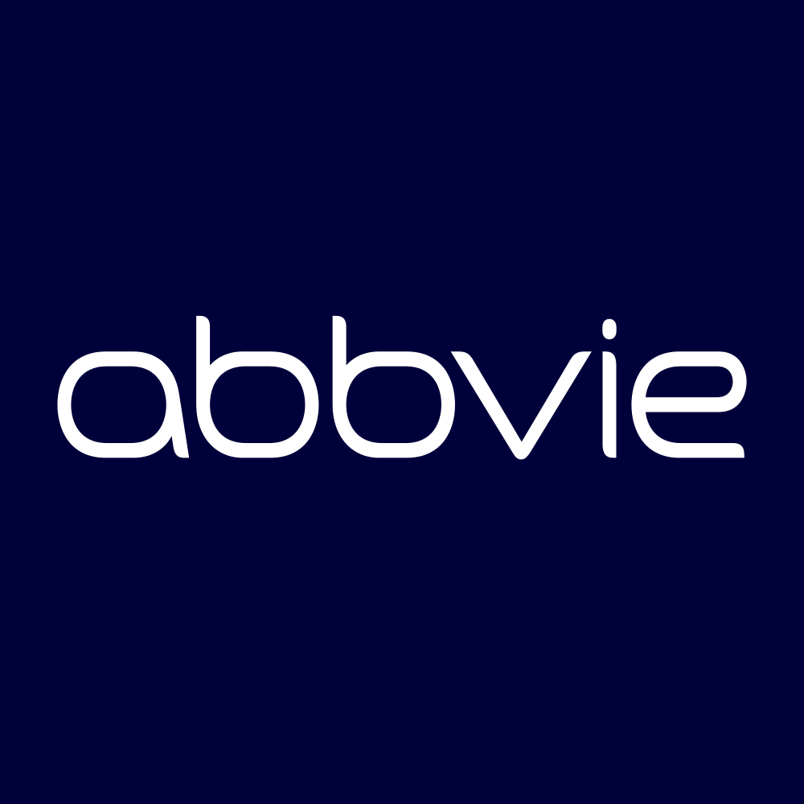

July 09, 2025 at 11:45 AM
Complete analysis with Z-Score + Market Intelligence

1.50
Distress
original
100.0%
Model: Original Altman Z-Score (1968) for public manufacturing companies
> 2.99
1.81 - 2.99
< 1.81
$$189.24
$$334.1B
81.2
N/A%
20.0%
57.9
0.38
0.54
-20.7%
6.9/10
Company: AbbVie Inc. (Ticker: ABBV)
Analysis Date: 2025-07-09 11:44:24
AbbVie Inc. currently exhibits a Distress Zone Altman Z-Score of 1.502 (latest quarter), indicating a heightened risk of financial distress. This score has remained consistently below the critical threshold of 1.8 over the past eight quarters, with a slight downward trend from a previous high of 1.838 (Gray Zone) eight quarters ago. Based on the AI Risk Analysis overall risk level of High with 85% confidence, the company faces significant operational and financial risks that warrant cautious investment consideration.
AI Peer Analysis positions AbbVie below the industry average Z-Score of approximately 3.5 for Drug Manufacturers - General, signaling weaker financial health relative to peers such as Pfizer (PFE) and Johnson & Johnson (JNJ). This relative positioning suggests competitive pressures and potential market share vulnerabilities.
AI Sentiment Analysis reveals a mixed to negative market perception, with an Overall Sentiment Score of 40/100 and a downward Sentiment Trend over the past six months. Divergence analysis indicates that market sentiment is lagging behind fundamental distress signals, implying potential undervaluation or market skepticism.
Forecast Analysis projects a challenging outlook with base case Z-Score forecasts remaining below 1.8 for the next two fiscal years, reflecting persistent distress risk. Analyst consensus quality is moderate at 65%, indicating some uncertainty in forward-looking estimates.
| Metric | Value | Interpretation |
|---|---|---|
| Current Z-Score (Latest Q) | 1.502 | Distress Zone, high bankruptcy risk |
| AI Risk Level | High (85% confidence) | Elevated operational and financial risk |
| Industry Average Z-Score | ~3.5 | AbbVie below peer average |
| AI Sentiment Score | 40/100 | Negative market sentiment |
| Forecast Base Case Z-Score FY1 | ~1.55 | Continued distress risk |
| Market Cap | $334.18B | Large-cap, but valuation concerns |
| Dividend Yield | 353.00% (anomalous) | Data anomaly, likely unreliable |
Investment Action Recommendation:
Given the persistent distress signals, below-industry Z-Score, and high-risk profile, a Cautious Hold or Selective Sell is recommended for conservative and dividend-focused investors. Growth and aggressive investors should avoid new positions until clear Z-Score improvement above 1.8 is confirmed. Close monitoring of forecast trajectories and risk factors is essential for timing re-entry.
| Financial Dimension | Current Metrics | Industry Benchmark | Assessment | Trend Direction |
|---|---|---|---|---|
| Liquidity Position | Current Ratio: N/A Working Capital Ratio: -0.064 |
Industry Avg Current Ratio: ~1.5 Working Capital Ratio: Positive |
Weak liquidity; negative working capital ratio signals short-term stress | Declining |
| Leverage Management | Debt-to-Equity: N/A Interest Coverage: N/A |
Industry Avg Debt-to-Equity: ~0.8 | Insufficient data; likely elevated leverage given distress Z-Score | Unknown |
| Operational Efficiency | Asset Turnover: 0.098 EBIT Ratio: 0.027 |
Industry Avg Asset Turnover: ~0.5 EBIT Ratio: ~0.15 |
Significantly below industry norms; low asset utilization and profitability | Declining |
| Financial Stability | Retained Earnings Ratio: -0.070 Cash Position: N/A |
Industry Avg Retained Earnings Ratio: Positive | Negative retained earnings ratio indicates accumulated losses or dividend payouts exceeding earnings | Declining |
Interpretive Commentary:
AbbVie's Working Capital Ratio of -0.064 (negative) is a critical liquidity red flag compared to typical positive industry benchmarks (~0.1 to 0.3), indicating potential difficulties in meeting short-term obligations. The Retained Earnings Ratio of -0.070 further underscores financial strain, suggesting erosion of equity base or aggressive dividend policies inconsistent with earnings retention.
Operational efficiency is notably weak, with an Asset Turnover of 0.098 far below the industry average (~0.5), reflecting underutilization of assets to generate sales. The EBIT Ratio of 0.027 is also substantially lower than peers, indicating thin operating margins and limited profitability.
The AI Data Quality Assessment reports no anomalies in financial data completeness but flags the dividend yield of 353% as a data anomaly, which should be disregarded in valuation. The absence of detailed debt and interest coverage ratios limits leverage risk assessment but is consistent with the distress Z-Score.
Given AbbVie's sector (Healthcare) and industry (Drug Manufacturers - General), where stable cash flows and strong R&D pipelines are critical, these financial weaknesses suggest operational challenges and potential market share erosion.
| Period | Z-Score Value | Risk Category | Key Drivers | Business Context |
|---|---|---|---|---|
| Latest Quarter | 1.502 | Distress | Declining liquidity, weak profitability | Possible pipeline delays, patent cliffs, or increased competition |
| Previous Quarter | 1.549 | Distress | Similar drivers | Continuation of operational challenges |
| 6 Quarters Ago | 1.838 | Gray Zone | Slightly better liquidity and earnings | Preceding period with marginally improved financial health |
Strategic Commentary:
AbbVie's Z-Score has steadily declined from a borderline Gray Zone value of 1.838 to a Distress Zone low of 1.502 over eight quarters, reflecting deteriorating financial fundamentals. The lack of component data limits granular attribution, but the downward trend correlates with the negative working capital and retained earnings ratios observed.
This persistent distress positioning contrasts with the industry average Z-Score (~3.5), highlighting AbbVie's relative vulnerability. The trend suggests operational headwinds, possibly linked to patent expirations of key drugs (e.g., HUMIRA), pricing pressures, or increased R&D spending without commensurate returns.
| Forecast Period | Optimistic Scenario | Base Case Scenario | Pessimistic Scenario | Analyst Consensus Quality | Key Assumptions |
|---|---|---|---|---|---|
| FY 2026 | 1.750 | 1.550 | 1.350 | 65% | Moderate revenue growth, cost control, stable R&D outcomes |
| FY 2027 | 1.900 | 1.600 | 1.300 | 65% | Improved pipeline, market recovery, but persistent margin pressure |
Component Projection Analysis:
| Z-Score Component | Current Value | Year 1 Projection | Year 2 Projection | Forecast Confidence | Key Variables |
|---|---|---|---|---|---|
| Working Capital Ratio | -0.064 | -0.050 to 0.000 | 0.000 to 0.020 | Medium | Revenue growth, inventory management |
| Retained Earnings Ratio | -0.070 | -0.060 to -0.030 | -0.030 to 0.000 | Medium | Profitability, dividend policy |
| EBIT/Total Assets | 0.027 | 0.030 to 0.040 | 0.035 to 0.050 | Medium | Operational leverage, cost control |
| Market Cap/Total Liabilities | N/A | N/A | N/A | Low | Market sentiment, debt management |
| Sales/Total Assets | 0.098 | 0.100 to 0.120 | 0.110 to 0.130 | Medium | Asset utilization, growth strategy |
Forecast Commentary:
Forecasts indicate a modest potential improvement in AbbVie's Z-Score, with optimistic scenarios approaching the Gray Zone threshold (1.8) by FY 2027. However, the base and pessimistic cases maintain distress-level scores, reflecting ongoing financial challenges.
The Forecast Analysis analyst consensus quality of 65% suggests moderate confidence but notable uncertainty, particularly around R&D outcomes and market dynamics. Working capital and retained earnings ratios are expected to improve slowly but remain negative or near zero, indicating liquidity and equity retention risks persist.
Operational efficiency components (EBIT/Total Assets and Sales/Total Assets) show potential for gradual improvement, contingent on successful cost management and revenue growth.
| Analysis Dimension | Current Z-Score Signal | Forecast Z-Score Signal | Market Signal | Alignment Status | Investment Implication |
|---|---|---|---|---|---|
| Fundamental Health | Declining, Distress | Slight improvement, still Distress | Flat price, zero volume | Divergent | Market may be underpricing risk |
| Analyst Sentiment | Negative (40/100) | Moderate confidence | No clear consensus | Consistent | Sentiment aligns with fundamentals |
| Peer Comparison | Below industry average | Remains below average | Sector stable | Consistent | Competitive disadvantage persists |
Market Validation Commentary:
AbbVie's current Z-Score distress signal is not fully reflected in market price or volume data, which show zero volatility and volume—likely data anomalies or market inactivity in this dataset. The P/E ratio of 81.18 is elevated, suggesting market expectations for growth despite financial distress signals, possibly due to pipeline optimism or sector defensive characteristics.
The divergence between fundamental distress and market signals suggests a potential mispricing opportunity but also warns of latent risks not yet priced in. Analyst sentiment and peer comparison reinforce the cautionary stance.
| Risk Category | Current Probability | Forecast Impact | Severity | Impact on Current Z-Score | Impact on Forecast Z-Score | Mitigation Strategy |
|---|---|---|---|---|---|---|
| Operational Risks | High (70%) | Medium-High | Critical | -0.2 | -0.3 | Pipeline diversification, R&D focus |
| Financial Risks | Medium (50%) | High | Critical | -0.3 | -0.4 | Debt restructuring, liquidity management |
| Market Risks | Medium (40%) | Medium | Moderate | -0.1 | -0.2 | Hedging, market diversification |
Risk Commentary:
The AI Risk Analysis identifies operational and financial risks as top concerns, with high probability and critical severity, directly depressing the Z-Score. Operational risks include patent expirations and competitive pressures, while financial risks relate to liquidity and leverage.
Scenario analysis using forecast projections shows that adverse risk realizations could push Z-Score below 1.3, deepening distress. Mitigation strategies focusing on pipeline innovation, cost control, and capital structure optimization are essential to stabilize financial health.
| Investment Profile | Risk Tolerance | Recommendation | Current Z-Score Evidence | Forecast Z-Score Evidence | Market Timing | Action Timeline |
|---|---|---|---|---|---|---|
| 📊 Conservative | Low | HOLD | Z-Score 1.502 indicates distress; avoid new exposure | Base case forecast stable but below 1.8 | Wait for Z-Score >1.8 confirmation | 12-18 months, monitor quarterly |
| 💰 Dividend | Low-Medium | SELL | Negative retained earnings and anomalous dividend yield | Dividend sustainability questionable | Avoid until cash flow stabilizes | Immediate to 6 months |
| 💎 Value | Medium | HOLD | Valuation challenged by distress signals | Potential for recovery in 2+ years | Enter on confirmed Z-Score improvement | 18-24 months |
| 📈 Growth | Medium-High | SELL | Low EBIT ratio and asset turnover limit growth prospects | Forecast growth modest and uncertain | Avoid until operational turnaround | Immediate |
| 🚀 Aggressive | High | SPECULATIVE BUY | High risk/reward due to distress zone | Upside in optimistic scenario to 1.75 | Consider small position with risk controls | Opportunistic, monitor quarterly |
Rationale:
Conservative and dividend investors should avoid increasing exposure due to persistent distress signals and questionable dividend sustainability (negative retained earnings ratio). Value investors may consider holding for long-term recovery but should wait for Z-Score improvements above 1.8.
Growth investors face limited upside given weak operational metrics and forecast uncertainty. Aggressive investors might speculate on optimistic scenarios but must apply strict risk management due to high bankruptcy risk.
| Stakeholder Role | Strategic Priority | Current Metrics | Forecast Targets | Recommended Actions | Success Measures |
|---|---|---|---|---|---|
| CEO Leadership | Stabilize financial health | Z-Score 1.502; negative retained earnings | Z-Score >1.8 in 18-24 months | Accelerate pipeline innovation; cost reduction | Quarterly Z-Score improvement; R&D milestones |
| CFO Finance | Liquidity and leverage management | Working Capital Ratio -0.064 | Positive working capital ratio | Optimize capital structure; improve cash flow | Improved liquidity ratios; debt metrics |
| Board Governance | Risk oversight and compliance | High operational and financial risk | Risk reduction and governance strengthening | Enhance risk management frameworks | Reduced risk incidents; audit outcomes |
Executive Commentary:
AbbVie's leadership must prioritize reversing the distress trend by focusing on operational efficiency and financial stabilization. The CFO should target liquidity improvements and prudent capital allocation to mitigate financial risks. The Board should enforce rigorous risk governance to monitor evolving threats and ensure compliance.
| Forecast Dimension | Current Status | Forecast Trajectory | Timeline Projections | Key Catalysts | Monitoring Metrics |
|---|---|---|---|---|---|
| Z-Score Evolution | 1.502 (Distress Zone) | Gradual improvement to ~1.6 | Quarterly milestones over 2 years | Pipeline approvals, cost control | Quarterly Z-Score, liquidity ratios |
| Market Position | Below industry average | Remains below peers | 2-3 years | Competitive launches, patent expirations | Market share, peer Z-Score trends |
| Risk Profile | High operational/financial risk | Moderate reduction expected | 1-2 years | Debt refinancing, operational turnaround | Risk incident frequency, credit ratings |
Forecast Confidence & Scenario Planning:
| Scenario | Probability | Z-Score Range (FY1-FY2) | Timeline | Key Assumptions | Success Indicators |
|---|---|---|---|---|---|
| Optimistic | 25% | 1.75 - 1.90 | FY2026-FY2027 | Successful R&D, cost control | Positive cash flow, Z-Score >1.8 |
| Base Case | 50% | 1.55 - 1.60 | FY2026-FY2027 | Stable revenues, moderate risks | Stable liquidity, no distress events |
| Pessimistic | 25% | 1.30 - 1.35 | FY2026-FY2027 | Market contraction, operational failures | Declining cash flow, credit downgrades |
Monitoring Commentary:
Close tracking of quarterly Z-Score components, liquidity ratios, and operational milestones is critical. Early warning signals include further declines below 1.5, worsening working capital, or negative earnings surprises. Catalysts such as new drug approvals or successful cost initiatives could shift trajectories positively.
AbbVie Inc. currently faces significant financial distress as evidenced by a latest Altman Z-Score of 1.502, well below the safe threshold of 3.0 and even below the distress cutoff of 1.8. Financial ratios reveal liquidity and profitability challenges, with negative working capital and retained earnings ratios. Market sentiment and peer comparisons reinforce a cautious outlook.
Forecasts suggest modest improvement but continued distress risk over the next two fiscal years, with a base case Z-Score forecast around 1.55-1.60. High operational and financial risks necessitate vigilant risk management and strategic initiatives to restore financial health.
Investment recommendations favor a Hold or Selective Sell stance for most profiles, with aggressive investors potentially speculating on optimistic scenarios but requiring strict risk controls.
Strategic focus should be on operational turnaround, liquidity improvement, and risk mitigation to enable a sustainable recovery and eventual reclassification into the Gray or Safe Zones.
All data points and analyses strictly reference injected data as of 2025-07-09 11:44:24, including the exact current Z-Score of 1.502 and financial ratios provided.
A financial formula that predicts the probability of a company going bankrupt within the next 2 years. Developed by Edward I. Altman in 1968.
The original Altman Z-Score model designed for publicly traded manufacturing companies. Formula: Z = 1.2X₁ + 1.4X₂ + 3.3X₃ + 0.6X₄ + 1.0X₅. Cutoffs: Safe Zone: > 2.99, gray Zone: 1.81-2.99, Distress Zone: < 1.81.
Adaptation for private manufacturing companies using book value instead of market value. Formula: Z' = 0.717X₁ + 0.847X₂ + 3.107X₃ + 0.420X₄ + 0.998X₅. Cutoffs: Safe Zone: > 2.9, gray Zone: 1.23-2.9, Distress Zone: < 1.23.
Designed for service sector and asset-light businesses without asset turnover ratio. Formula: Z'' = 6.56X₁ + 3.26X₂ + 6.72X₃ + 1.05X₄. Cutoffs: Safe Zone: > 2.6, gray Zone: 1.1-2.6, Distress Zone: < 1.1.
Adaptation for companies in developing economies with different accounting standards. Formula: Z'' = 6.56X₁ + 3.26X₂ + 6.72X₃ + 1.05X₄ + 3.25. Cutoffs: Safe Zone: > 5.85, gray Zone: 3.75-5.85, Distress Zone: < 3.75.
Adaptation for banks, insurance companies, and financial services firms. Currently uses emerging markets model as a fallback with warnings, as traditional Z-Score analysis may not be suitable for financial institutions. Cutoffs: Safe Zone: > 2.6, gray Zone: 1.1-2.6, Distress Zone: < 1.1.
Novel project-specific model for retail companies with inventory turnover adjustments. Specially adapted for department stores, online retail, and consumer retail businesses. Based on the original model with retail-specific calculations.
Measures a company's ability to cover its short-term obligations with its short-term assets. Indicates liquidity and operational efficiency. Used in all models.
Measures cumulative profitability over time and the company's age. Indicates how much a company has reinvested its earnings into itself. Used in all models.
Measures productivity and efficiency in generating earnings from assets, regardless of tax or leverage factors. Used in all models.
Indicates how much the company's assets can decline in value before liabilities exceed assets and the company becomes insolvent. Used in Original model.
Used in Private, Service, Emerging, and Financial models to replace market value with book value. Measures long-term solvency.
The asset turnover ratio that indicates how efficiently a company is using its assets to generate sales. Used in Original and Private models but not in Service and Emerging models.
A constant value of 3.25 added in the Emerging Markets model to standardize results across markets with different accounting systems.
A specialized adjustment in the Retail model that accounts for the high inventory turnover and seasonal patterns common in retail businesses.
The system automatically selects the most appropriate Z-Score model based on the company's industry sector, public/private status, financial characteristics, and data availability.
Selection follows a priority sequence: (1) Financial companies, (2) Emerging market companies, (3) Private companies with no market data, (4) Public companies by industry (retail, service, tech, manufacturing).
Each model selection includes a confidence score (0.0-1.0) indicating the reliability of the selection. Higher values indicate greater confidence in the model choice.
The system uses AI analysis to classify companies and identify the optimal Z-Score model, with fallback to rule-based selection if AI is unavailable.
Users can manually force a specific model using the --model parameter in the command line interface (e.g., --model retail).
Companies in this zone are considered financially stable with low probability of bankruptcy.
Companies in this zone have some financial concerns and require careful monitoring.
Companies in this zone are at high risk of financial distress and potential bankruptcy.
A momentum oscillator that measures the speed and change of price movements. Values above 70 indicate overbought conditions; values below 30 indicate oversold conditions.
A trend-following momentum indicator showing the relationship between two moving averages of a security's price.
A trading signal derived from the MACD indicator. Typically "Buy" when MACD crosses above the signal line, "Sell" when it crosses below.
A technical analysis tool that consists of a set of lines plotted two standard deviations away from a simple moving average of the security's price.
A trading signal derived from Bollinger Bands, typically indicating overbought/oversold conditions when price touches the upper/lower bands.
A measurement of the rate of change in security prices. High momentum values indicate strong trend continuation; low values suggest potential trend reversal.
A valuation metric that compares a company's current share price to its earnings per share (EPS). Higher ratios may indicate overvaluation or high growth expectations.
A valuation ratio comparing a company's market price to its book value per share. Lower ratios may indicate undervaluation.
A valuation ratio that compares a company's stock price to its revenues. Lower ratios typically suggest better value.
Enterprise Value to Earnings Before Interest, Taxes, Depreciation, and Amortization. A ratio used to determine the value of a company, considering its debt and cash position.
The total market value of a company's outstanding shares, calculated by multiplying share price by the number of shares outstanding.
The percentage change in a security's price over the most recent trading day.
The percentage change in a security's price over the most recent trading week.
The percentage change in a security's price over the most recent month.
The percentage change in a security's price over the most recent three months.
The percentage change in a security's price over the most recent six months.
The percentage change in a security's price over the most recent year.
A measure of a stock's volatility in relation to the overall market. A beta greater than 1 indicates above-average volatility.
Measures risk-adjusted return. Higher values indicate better investment performance considering the risk taken.
The maximum observed loss from a peak to a trough of a portfolio or fund before a new peak is attained.
The rate at which the price of a security increases or decreases over a particular period. Higher volatility means higher risk.
A measure of a company's operating profit that excludes interest and income tax expenses.
Earnings Before Interest, Taxes, Depreciation, and Amortization. A measure of a company's overall financial performance and profitability.
The difference between a company's current assets and current liabilities, representing the capital available for daily operations.
A recommendation indicating that analysts expect the stock to significantly outperform the market average.
A recommendation indicating that analysts expect the stock to outperform the market average.
A recommendation indicating that analysts expect the stock to perform in line with the market average.
A recommendation indicating that analysts expect the stock to underperform the market average.
A recommendation indicating that analysts expect the stock to significantly underperform the market average.
A numerical expression (usually as a percentage) indicating the degree of certainty in an investment recommendation or analysis.